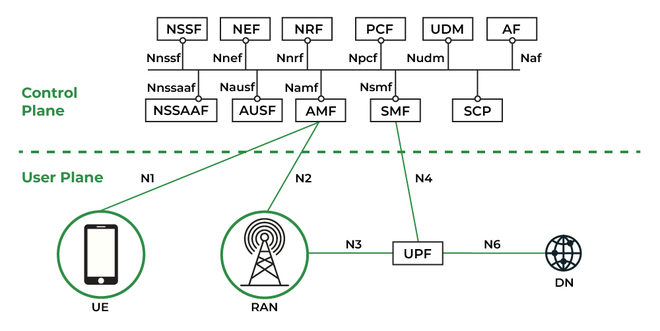

Amadurecimento da NFV
Pontos-chave enfrentados pela NFV para se consolidar.
Inter-operabilidade
Nesse contexto, surgiram projetos, ativos até hoje, como o Anuket:- Fornece um modelo comum, especificações de infraestrutura de referência padronizadas e frameworks de conformidade para funções de rede virtualizadas (VNFs) e nativas em nuvem (CNFs).
- Seu principal objetivo é minimizar a proliferação de arquiteturas na indústria de telecomunicações, reduzindo o tempo de integração (onboarding) e os custos de desenvolvimento, ao garantir que as funções de rede rodem de maneira previsível sobre infraestruturas conformes.
Questões Operacionais
Para resolver essas questões, a arquitetura e as práticas de implantação evoluíram significativamente:
- Gerenciamento unificado: Introdução de orquestradores de múltiplos domínios (Cross-domain MANO) e integração com SDN/SD-WAN para provisionamento automatizado de ponta a ponta.
- Cloud-Native (CNFs): Adoção de contêineres e microsserviços via Kubernetes. A separação do estado permitiu atualizações modulares sem interrupção (rolling updates) e pipelines de CI/CD. Antigamente eram utilizadas VM's inteiras para NF's, que, apesar de ter um ciclo de vida mais longo, eram mais demoradas para se reconfigurar
- Observabilidade: Uso de telemetria padronizada, agentes de monitoramento e sistemas de correlação baseados em AIOps para apontar a causa raiz de problemas rapidamente.
Caso de uso de larga escala: 5G

O núcleo do 5G (5G Core) foi projetado sob o modelo de Arquitetura Baseada em Serviços (SBA), onde funções vitais — como o AMF (gestão de mobilidade) e o SMF (gestão de sessões) — são totalmente separadas do hardware físico. No cenário moderno, essas funções operam como Funções de Rede Cloud-Nativas (CNFs). Isso significa que elas são construídas como microsserviços independentes, empacotadas em contêineres e orquestradas dinamicamente por sistemas como o Kubernetes. O efeito de não utilizar essa arquitetura seria paralisante para o 5G: caso as operadoras ainda dependessem de hardwares proprietários e dedicados (appliances físicos), a rede seria rígida, cara de escalar e sofreria com a lentidão para receber atualizações. Sem a virtualização, conceitos fundamentais do 5G, como o Network Slicing (fatiamento de rede), seriam tecnicamente impossíveis de serem gerenciados dinamicamente.